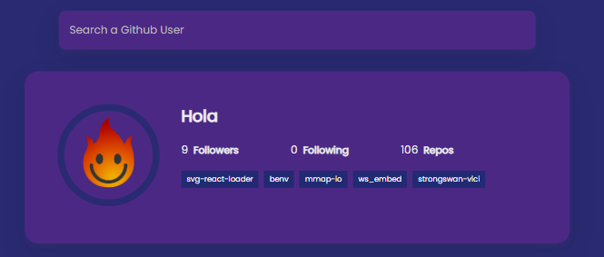
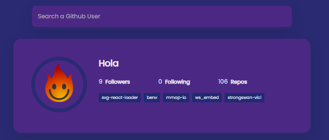

Acceder a Información Detallada: Haz clic en cualquier repositorio para ver información más detallada y acceder al código fuente.
Explorar Repositorios: Obtén una lista de los repositorios públicos del usuario. Bienvenido a nuestro buscador de usuarios de GitHub, una herramienta intuitiva que te permite explorar perfiles y repositorios en GitHub de manera sencilla
Acceder a Información Detallada: Haz clic en cualquier repositorio para ver información más detallada y acceder al código fuente.
Explorar Repositorios: Obtén una lista de los repositorios públicos del usuario. 